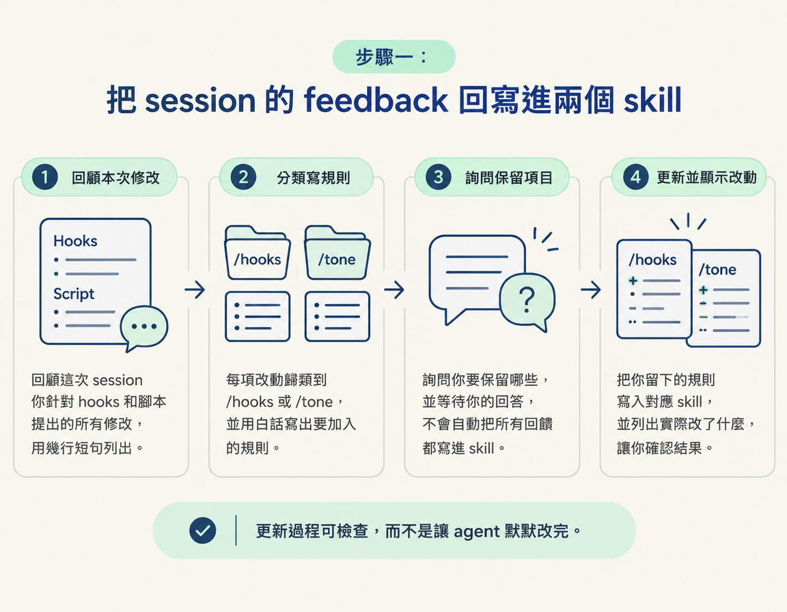
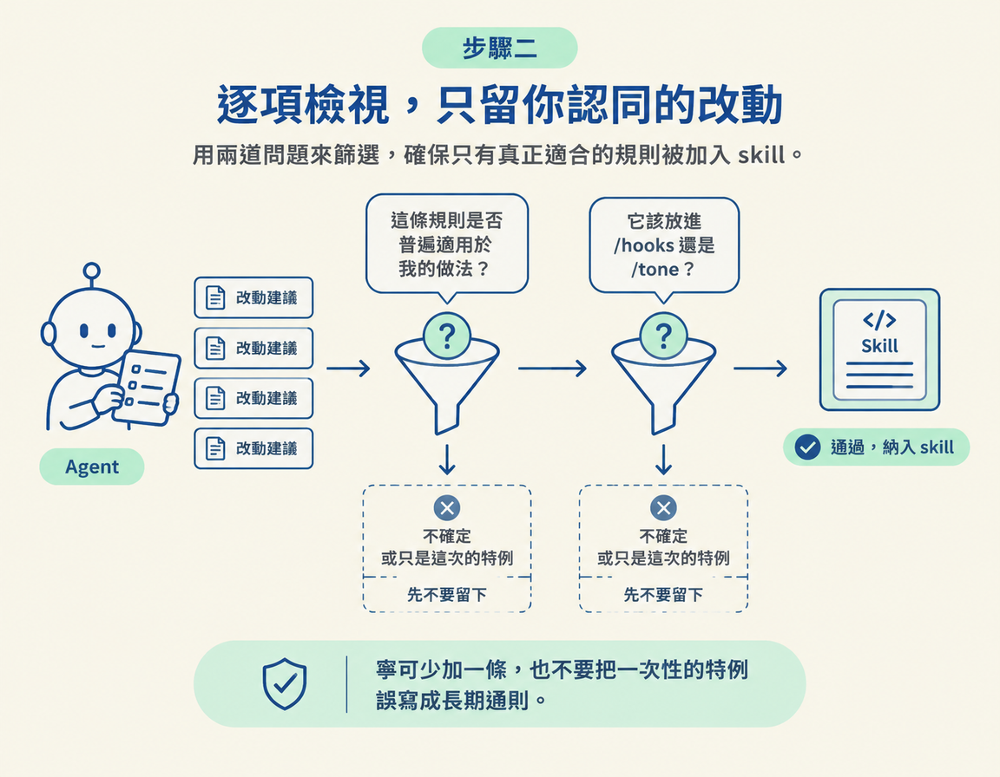

這是從點子一路做到可照念腳本後的最後一步：把這次 session 裡你給 agent 的回饋，整理後寫回 /hooks 和 /tone。做完後，你會看到 agent 提議的改動，也能逐條決定要不要留下。等腳本變多，還可以用 RUBRIC Scripts 集中管理並送進提詞機。
上一節你做出了一份能照念的腳本。寫的過程中，你可能對 agent 提了不少要求，例如「這句太長」「我平常不會這樣講」「這個 hook 換一個」。這些回饋如果只留在對話裡，下一次開新 session 時就不會自動跟著你走。
這一節要養成一個收尾習慣：每次 session 結束後，把回饋整理成規則，更新你已建立的 skill。Skill 是一組讓 agent 按照特定方式工作的指引。講師把下載來的 skill 稱為「baseline（基準版）」，意思是它們只是起點，不是成品。真正讓它們愈來愈好用的，是你每次用完後檢視回饋，再把認同的改動寫進去。
/hooks 與 /tone。前者用來處理開頭 hook，後者用來指引語氣與用詞。這一步會一起檢視它們。課程提供的 prompt，會請 agent 依序回顧、分類、詢問你要保留哪些，再把你同意的內容寫回 skill。Session 結束時，把整段貼給 agent：
"""Update my skills based on the feedback I gave you in this session. 1. Look back over this session and list every change I asked for in my hooks and scripts, in a few short lines. 2. For each one, tell me which skill it belongs in (/hooks or /tone) and the rule you'd add, in plain words. 3. Ask me which ones to keep, and wait for my answer. 4. Add the ones I keep to those skills, and show me what changed."""
這段指令分成四步，讓更新過程清楚可檢查，而不是讓 agent 默默改完：
/hooks 或 /tone，再說明要加入什麼規則。這能把「感覺不對」整理成看得懂的指引。
「問你哪些要留」是必要的把關。Agent 可能抓錯回饋的重點，也可能把一次性的例外誤認成長期習慣。比如你只是某支影片想用比較嚴肅的語氣，它卻可能把這次的要求寫成「你永遠不開玩笑」。
所以，請逐條看它提出的改動，並問自己兩個問題：
| 要問自己 | 留下它的條件 |
|---|---|
| 這條規則是不是普遍適用於我的做法？ | 是，而且之後每次都希望 agent 按這個方式寫 |
| 它應該放進 /hooks 還是 /tone？ | 和開頭 hook 有關的放進 /hooks，和語氣、用詞有關的放進 /tone |
如果你的答案是「不確定」，或「那只是這次的特例」，就先不要留下。寧可少加一條，也不要把錯誤的通則寫進 skill，因為 agent 之後每次都會參照這些指引，寫錯了就可能一再重複。

只有一兩個腳本時，放在對話視窗裡還算容易管理，腳本一多，只靠聊天視窗就不太方便了（that is actually not the best experience when it comes to creating content）。因此，課程講師在這裡先介紹 RUBRIC Scripts。
RUBRIC Scripts 可以集中管理腳本、把腳本送到提詞機（teleprompter），也能讓你一口氣錄完所有短影片。課程也補充，RUBRIC Scripts 的 /rubricscripts skill 會使用你的 /hooks 和 /tone 來寫腳本。也就是說，你現在建立的兩個 skill，之後可以直接提供給這套系統使用。
所以，這一步不只是多認識一個工具，也讓你看見：現在建立的 skill 不只服務這一次 session，之後也能交給其他工具重複使用。
下載來的 skill 只是 baseline，每次 session 結束後整理回饋，才會讓它們愈來愈貼近你的習慣。貼上課程提供的 prompt，agent 會先回顧你這次提出的要求，逐條歸類到/hooks或/tone，再寫成白話規則。你可以逐項決定要保留哪些，最後確認 agent 實際改了什麼。只留下普遍成立的做法，才不會讓一次性的特例變成反覆套用的錯誤規則。之後腳本變多，RUBRIC Scripts 可以集中管理、送進提詞機，也能讓你一口氣錄完，它的/rubricscripts會使用你現在建立的/hooks與/tone。
做完這一步，你會有一份經過自己確認、更新過的 /hooks 和 /tone，也能看見每一項改動的內容。這就是本課的成果：把這次 session 裡有效的回饋留下來，讓下一次寫腳本時也能用上。接下來，你可以把這些 skill 帶到下一個節點，或直接開一支影片試試看。